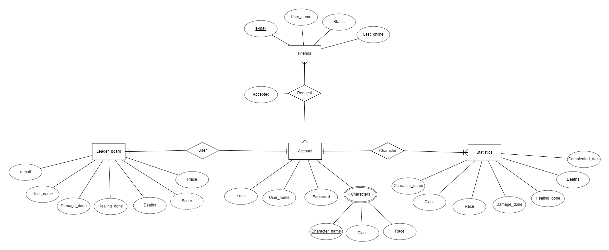
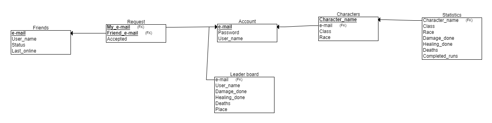

Csoport neve: HighSoft
Feladatsorszáma: F4
Feladat címe: Rendszertervezés
Rendszertervezés
Gyakorlatvezető:
SZŰCS MIKLÓS
Csoporttagok:
| TAMÁS JANKA | GIE0EJ | TAMAS.JANKA95@GMAIL.COM |
| SZILÁGYI GÁBOR | S9NJK6 | GABSZI12345@GMAIL.COM |
| JÓNIS BÁLINT | LN40BG | JONISBALINT@GMAIL.COM |
| DUDÁS DÁNIEL | VUXFKS | D.DANIEL910617@GMAIL.COM |
| KLÁBEN SZABOLCS BENCE | H46LPD | KLABEN.SZABOLCS@GMAIL.COM |
Beadás Dátuma:
2020. 10. 27.
| Dátum | Verzió | Leírás | Szerző(k) |
|---|---|---|---|
| 2020. 11. 14. | 1.0 | Első verzió | Szilágyi Gábor |
| 2020. 11. 14. | 1.1 | Címlap és sablon alkalmazása | Kláben Szabolcs Bence |
A megbeszélések időpontjai:
|
2020. 11. 7. 15:00 Jelen lévő személyek: |
|
Tartalomjegyzék
- Bevezetés
- Felhasználói felület
- Adatmodellek
- Adatbázis kezelő kiválasztása
- Szemantikai adatmodell (ER modell)
- Relációs adatmodell
- Relációs adatmodell
- Mellékletek
1.Bevezetés
A következő dokumentumban megtalálható a felhasználói felületek leírása némi grafikus kiegészítéssel, valamint a programhoz tartozó adatbázis és az ehhez használt technológiák, modellek leírása.
2. Felhasználói felület
A felhasználói felületet mindig látja a játékos így fontos, hogy a felépítésében egyszerű és könnyen megérthető legyen. A célközönségünkből és a platformból adódóan a grafika modern és letisztult.
A felhasználói felületet az alábbi nagyobb csoportokra lehet osztani:
- Regisztrációs/bejelentkezési felület: Ezzel a felülettel találkozik a felhasználó a program indítása után. Itt többféle lehetőség elérhető mindkét tevékenység végrehajtására (fiók létrehozás, Google és Facebook fiók használata). A beléptetés automatikusan is elvégezhető, ha a program által engedélyezve van.
- Főmenü: Itt a fontosabb menüpontok találhatók mit pl. a Játék indítása, Beállítások, Kilépés etc.
- Játékfelület: Itt történik maga a játékmenet, a játék elindítása után ezt a felületet láthatjuk. A felületen látható a karakterek jelenlegi állapota, az éppen történő esemény és a lehetséges cselekedetek. A felület a játék alatt keveset változik.
A következő grafikus minták a felhasználói felület főbb részeit mutatják be.
A regisztrációs és belépési felület szinte megegyező kinézetű más alkalmazások már megszokott felületeivel, annyi különbséggel, hogy a stílusa a játék többi felületéhez igazodik.
A belépés után a főmenüvel találkozunk, ahol megtalálható az összes fontosabb menüpont. A Játék indítása menüpontban a játékosnak választani kell miként szeretne játszani: csatlakozni már meglévő játékhoz egy kód alapján vagy létrehozni egy szobát (új játékmenetet), amelybe a többi játékos csatlakozhat (a szobák különböző tulajdonságaik a későbbiekben módosíthatók). Ugyanezen menüpont alatt lehet vásárolni különböző történeteket, classokat, fajokat (race), skineket.
A Beállítások menüpontban különböző módosításokat lehet végrehajtani (hang, adományozás, kijelentkezés). Továbbá egy Súgó opció is elérhető itt, amelyben a játékmenettel kapcsolatos segítségek elérhetők.
A Hősközpontban elérhető a játékos által elérhető karakterek (classok, fajok, skinek), illetve a korábban említett vásárlási funkció is.

Ha elindult a játékmenet, az ehhez tartozó felülettel fogunk találkozni. Itt található az esemény leírása (történet), az elvégezhető cselekedetek és a játékosok karaktereinek az állapota (HP, MP, Stamina, XP). A felület kinézete nem változik nagy mértékben, leginkább a benne megjelenített tartalmak módosulnak.

A felhasználói felület az áttekinthetőségéből és egyszerűségéből adódóan könnyen kezelhető a játékosok által, viszont egy bizonyos mértékű odafigyelést igényel a kezdeti fázisban.
A későbbiekben tervezünk egy szerver szintű leaderboard, barátlista és karakter-statisztika implementálását is, viszont ennek a terve jelenleg még csak vázlatszerű, nincs pontosítva milyen menüpont alatt és hogyan lesz elérhető.
3. Adatmodellek
3.1. Adatbázis kezelő kiválasztása
A játékhoz alapvetően MySQL adatbázist tervezünk, bár az események szövegét txt adatbázisban tároljuk, míg a hozzá tartozó képek pedig png formátumba. SQL táblákban fogunk tárolni minden olyan adatot, amelyet a felhasználóhoz lehet kötni (pl. felhasználói adatok, karakterek, barátlista...).
3.2. Szemantikai adatmodell (ER modell)
3.3 Relációs adatmodell
Az adatbázis központi része a felhasználói fiók (Account), amelyben a fiók alapadatait tároljuk mint, az e-mail címet, felhasználónevet és jelszót, karakteres formában. Itt tároljuk a fiókhoz tartozó karaktereket (Characters) is, illetve a hozzá tartozó olyan adatokat mint a karakter neve, osztálya és faja, ezeket szintén karakteres formában.
Jövőbeli tervek:
A karakterekhez fog tartozni egyenként egy statisztika (Statistics) is, amelyben megtalálható a karakter neve, classa és faja, karakteres formában. Az okozott sebzés, gyógyítás, halálok és a befejezett körök száma is itt lesznek tárolva szám értékként.
Továbbá tervezünk egy ranglétrát (Leaderboard) is, amely fiókonként (a befejezett körök száma kivételével) összesíti a hozzátartozó karakterek statisztikáját, emellett egy metódus alapján kiszámol egy pontszámot, amely eldönti a helyezést.
A felhasználónak lehetnek barátai (Friends), ami felkérés alapján működik. Ha ezt a felkérést a másik fél elfogadta, akkor a barát felhasználóról bizonyos adatok láthatók lesznek. Ezek az adatok: a barát e-mail címe, online státusza, valamint az időpont, amikor legutóbb elérhető volt.
Az adatbázis kezelővel egy DBase osztály tart majd kapcsolatot. Osztálydiagramja itt látható:

Attribútumai (adattagjai):
- name: String típusú változó, amely a tábla nevét írja le.
- password: String típusú változó, amely az adatbázishoz való hozzáférést biztosítja.
- url: String típusú konstans, amely az adatbázis elérési útvonalát adja meg.
Metódusai:
- dbAuthorize(): boolean típusú metódus. Paraméterei: name, password. A metódus ellenőrzi, hogy helyes felhasználónévvel és jelszóval szeretnének-e belépni az adatbázisba. Amennyiben igen, true értékkel visszatér, ha nem, akkor false értékkel megtagadja a beléptetést.
- dbOpen(): Visszatérés nélküli eljárás. Paraméterei: name, password, url. Csak akkor fut le, ha sikeres az adatbázisba való belépés (dbAuthorize() true értékkel tér vissza). Ha a belépés sikeres akkor megnyitja az adatbázist.